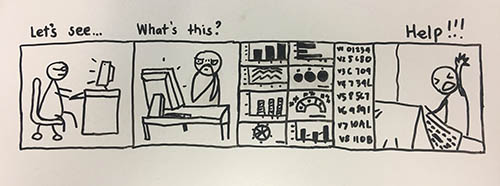
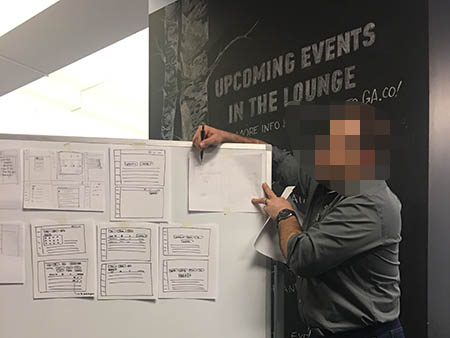

<div class="single-project-section section">
    <div class="container">
        <div class="row single-project-row">
            <div class="col-lg-9 col-md-8 content">
                <div class="project-single-first-box">
                    <div class="project-single-title">
                        <h3>Loss Prevention Tools Web App</h3>
                    </div>
                </div>
                <div class="project-single-desc">
                        <p>This was done as a design concept for a client.</p>
                        <p>A design of Loss Prevention Tools, to deliver the Minimum Viable Product focusing on user ​research
                           wireframes, clickable prototype, user stories, and flows to ​validate ​client's approach ​for ​a ​new ​
                           loss prevention ​web ​app.</p>
                </div>
                <div class="margin-box margin-p">
                    <h2>Overview</h2>
                    <div class="opacity-box"></div>
                    <h3>About</h3>
                        <p>Loss Prevention Tools is working to build a digital tool geared toward retail loss prevention to 
                           assist loss prevention experts with analyzing data and case management.</p>
                        <p>For this concept piece, I worked on a team of three and served as the Project Manager, Information
                            Architect, and Visual Designer.</p>
                    <h4>Goals:</h4>
                        <ul>    
                            <li>Create a more intuitive data analysis web app for analyzing internal theft within retailers.</li>
                            <li>Validate ideas and user base.</li> 
                            <li>Offer a less complicated and less expensive tool that is more straightforward and doesn’t 
                                require intensive training.</li>
                            <li>Offers key components of other loss prevention tools.</li>        
                        </ul>
                    <h3>Duration</h3>
                        <p>This project was completed over a 2.5 week design sprint.
                </div>
                    <h3>Process</h3>
                        <ul> 
                            <li>Business Analysis (develop understanding of client through kick off meeting and in depth 
                                interview</li>       
                            <li>User research</li>
                            <li>User Interviews</li>
                            <li>Information Architecture</li>
                            <li>Proto Persona & Task Scenario Development</li>
                            <li>Visual Design</li>
                            <li>Usability Testing</li>
                            <li>Iterations & Final Prototype</li>
                        </ul> 
                    <h3>Final Design</h3>
                    <div class="img-box">
                            <figure>
                            
                            <figcaption>Figure 1. Loss Prevention Tools app wireframe and final mockup.</figcaption>    
                            </figure>
               </div> 
               
               <div class="margin-box margin-p">
                    <h2>Discovery</h>
                    <div class="opacity-box"></div>
                    <h3>Client Interview</h3>
                        <p>We compiled a list of questions about the company, business goals, and asked the client during kick
                           off meeting. The responses gave us great insight about the client and his specific goals for this 
                           project.
                    <h3>What do users think about their current loss prevention digital tool? What would make their job easier?</h3>
                        <p>The first 5 days of the project was spent with research.Even though  Lauren was the head researcher, 
                            it made sense to help her in looking for the right target audience and conduct interviews. First, I 
                            went out with the team for initial interview with store managers around nearby businesses during 
                            daytime. Secondly, I went to 4 stores still in downtown (All Saints Clothing, Carhartt, Ross, Barnes 
                            and Noble) asking the Loss Prevention managers with 17 formal questions and recruited them for testing 
                            later. So far, I managed to interview 2 successfully. None said yes for the testing.
                        </p>
                    <h3>Main themes from the interviews:</h3>  
                        <ul>
                            <li>Problem: Manually sifting through the data to find the outliers, which takes 8-20 hours.</li>
                            <li>The way that managers and directors go about their investigations really depends on what type of theft
                                occurs (examples include: refunds, returns, before/after hours transactions, voids, discounts, paperwork 
                                errors, training errors).</li>
                            <li>Frequency of data varies from store to store, ranging from daily to weekly.</li>
                            <li>Data uploading varies, ranging from copying and pasting, IT uploading, and a real-time updated P.O.S.</li>
                        </ul>   
                    <h3>Surprising Findings & Insights:</h3>
                        <ul>
                            <li>4/4 users were unhappy with their current platform</li>
                            <li>Not one platform used or one consistent standardized procedure.</li>
                        </ul>    
                    <h3>Recommendations for the web app after initial research:</h3>
                        <ul>
                            <li>Simple and clear dashboard that makes it easy for users to upload data and filter for results they 
                                are looking for.</li>
                            <li>Option to filter top results, date range, print/PDF/email report.</li>
                            <li>Ability to pull out certain results and organize them in ‘To Investigate’ and ‘Investigated’ folders
                                within dashboard.</li>        
                        </ul>
                    <h3>The Problem & Solution</h3> 
                        <p>Those who work in loss prevention are finding it difficult to effectively upload and analyze data for 
                           specific internal theft categories with a tool that is price effective and tailored to their specific needs.
                        <p>We will create a platform that loss prevention experts can utilize to upload data, filter the proper 
                           categories, analyze the results, and conduct investigations in a time-efficient manner.<p> 
                    <h3>Web App Heuristics</h3> 
                        <p>While Lauren compiled the research results, I as the information architect and visual designer went ahead
                           in conducting a heuristic analysis of a possible sitemap and visual design. It was significant for us to 
                           understand how information will be organized and presented to the user including dimensions related to 
                           structure,organization, language, and help. It was noteworthy to think about visual language, representation
                           of interactivity, layout, color, typography, iconography, and graphics. I used Nielsen's Heuristics and also
                           researched web app specific heuristics.</p> 
                           insert sample picture of a webapp with annotations                                
               </div> 

               <div class="margin-box margin-p">
                    <h2>Approach</h>
                    <div class="opacity-box"></div>
                    <h3>Who is our Primary User? Secondary User?</h3>
                        <p>Lauren developed 2 proto persona based on the initial user research. Richard, being the Director of Loss 
                            Prevention, was our primary user and Danielle, the Loss Prevention Associate, was the secondary target user 
                            on the other hand.</p>
                        <div class="img-box">
                                <div style="display: flex">
                                    <figure>
                                        
                                        <figcaption>Primary persona</figcaption>
                                    </figure>
                                    <figure>
                                        
                                        <figcaption>Secondary persona</figcaption>
                                    </figure> 
                                </div>  
                           </div>
                        <p>The persona and scenario development helped to keep us on track as a team and prioritize the features to be added
                            to the web app. The persona also helped us in creating a particular flow a user might possibly take. 
                        </p>
                        <p>I , as the visual designer, sketched a storyboard to illustrate Richard’s challenges in using the current loss 
                            prevention tool his company provided.
                        </p> 
                        <div class="img-box">
                                <div style="display: flex">
                                    <figure>
                                        
                                        <figcaption>This is based on a story of a Loss Prevention Director who happens to be Richard; he wants
                                             to investigate an employee and uses the POS data that is fed into the security system to determine 
                                             if that employee is committing fraud/theft. So you can see Richard is extremely overstimulated with 
                                             the amount of data he is looking at. He does not want to manually sift through the data. He needs help.
                                             He is so frustrated that he throws his hand up in the air.</figcaption>
                                    </figure>   
                                </div>
                    <h3>Feature Prioritization</h3> 
                        <p>Based on the results of user research the team and I agreed that in order for this to be a usable app, this 3 success 
                            metrics had to be considered:
                        </p>
                           <ul>
                                <li>Quick learning curve.</li>
                                <li>Easy to use for Loss Prevention Investigators.</li>
                                <li>Validate idea and identify user base.</li>   
                           </ul>
                        <p>With the solution statement created, I continued the storyboard with this:</p> 
                            <div style="display: flex">
                                <figure>
                                    
                                    <figcaption>You can see Richard here wondering about a better tool on the market that will help him analyze data 
                                        and manage cases. Later, you notice him using the less complicated and straightforward Loss Prevention Tool web 
                                        app with a big smile on his face. Helps him better in analyzing internal theft efficiently. He’s happy. Because 
                                        of that, Richard and the store is able to preserve profit and prevent losses. So, happy store owner.</figcaption>
                                </figure>
                            </div>               
                    <h3>Information Architecture</h3>
                        <p>My teammates and I agreed to consider the layout of the web app simple. With that and the research findings in 
                           mind, I being the information architect made this sitemap. I wanted to create a simple and logical site structure 
                           that can help users achieve their end goal, and to allow them to easily understand how to navigate, giving them 
                           a positive experience. I started with some sketches on paper before I came up with the final one.</p>
                           <div class="img-box">
                                <div style="display: flex">
                                    <figure>
                                        
                                        <figcaption>Sitemap in paper</figcaption>
                                    </figure>
                                    <figure>
                                        
                                        <figcaption>Final Sitemap</figcaption>
                                    </figure> 
                                </div>  
                           </div> 
                        <p>After some analysis and careful thought, I went on to develop a user need’s focused flow which can help Richard 
                            and Danielle  to complete their task, achieve their goals and feel better about it. Tasks include uploading a file, 
                            filtering data, running report, viewing analyzed report, saving it, sharing the data and exporting it.and I started the 
                            initial user flows in paper and  finalized it via OmniGraffle.
                        </p> 
                            <div class="img-box">
                                <div style="display: flex">
                                    <figure>
                                        
                                        <figcaption>User flow in paper</figcaption>
                                    </figure>
                                    <figure>
                                        
                                        <figcaption>Final user flow</figcaption>
                                    </figure> 
                                </div>  
                            </div> 

             <div class="margin-box margin-p">
                <h2>Design</h>
                    <div class="opacity-box"></div>
                    <h3>Sketching</h3> 
                    <p>Dom as the Interaction Designer led the creation of some rough sketches for possible featured screens. I also provided my input 
                        as we did another round of whiteboarding. </p> 
                        <div class="img-box">
                                <div style="display: flex">
                                    <figure>
                                        
                                    </figure>
                                </div>
                        </div>            
                    <h3>Design Studio</h3>
                        <p>A major decision my group mates and I thought of was to conduct a design studio led by Dom the Interaction Designer. The purpose 
                           of this was to understand the client's views and to clearly define the key screens the web app needed. It was a vital 
                           brainstorming, and learning experience for myself and the team as this helped in knowing what major components needed to be 
                           displayed for the web app design.
                        </p>
                        <div class="img-box">
                                <div style="display: flex">
                                    <figure>
                                        
                                    </figure>
                                    <figure>
                                        
                                    </figure> 
                                </div>  
                        </div> 
                    <h3>Wireframes</h3> 
                        <p>As the interaction designer, Dom made an initial wireframes. As soon as he was done, he handed it over to Lauren for initial user testing. 
                            It was challenging to find target users. It was more hard to convince any available Loss Prevention Specialist to test the screens. 
                            But luck was on our side and was able to get someone to try it. Lauren led the user testing by sending the link to a user and then asking
                            the user to go through it while talking out loud over the phone for any concerns, ideas and more. I recorded the conversation using my phone 
                            while Lauren and Dom took notes on the other hand. We did this process 3 times. We were also able to conduct an in person user testing. I was 
                            very fortunate to find this person at the right place at the right time. After Lauren relayed the documentation results from the user testing, 
                            Dom incorporated the changes and started designing high fidelity wires.
                        </p> 
                        Insert here some hifi screens
                    <h3>Style Guide Development</h3> 
                        insert screens with colors
                         


                            
                            
<
                                
                            
              


                <div class="margin-box">
                    <h4>Problem</h4>
                    <div class="opacity-box">
                        <p>In August, 2011, MOOOV launched their iOS App and since then, they’ve gone from
                            strength to strength in the online tickets market. Unfortunately, since the app’s
                            launch, it hasn’t seen the love or attention it deserves. </p>
                    </div>
                </div>
                <div class="margin-box">
                    <div class="img-box">
                        
                        <div class="legend">Figure 1. MOOOV’s app before and after redesign.</div>
                    </div>
                </div>
                <div class="margin-box">
                    <div class="opacity-box">
                        <p>So, at the end of 2015, I helped MOOOV redesign their iOS app. Acting as their Lead UI
                            Designer, we created new mobile guidelines and most of the features you’ll
                            see to this day. </p>
                    </div>
                </div>
                <div class="margin-box">
                    <h4>Research & Analysis</h4>
                    <div class="opacity-box">
                        <p>User research focuses on understanding user behaviors, needs, and motivations through
                            observation techniques, task analysis, and other feedback methodologies.
                            For me user research is “the process of understanding the impact
                            of design on an audience”.</p>
                    </div>
                </div>
                <div class="margin-box">
                    <h5>User scenarios</h5>
                    <div class="opacity-box">
                        <p>Due to MOOOV’s rapid growth, there was plenty of data available to us, so we used this
                            to accurately define their user base, the way these users behaved
                            and several possible use cases for the app.</p>
                    </div>
                </div>

                <!-- Table -->
                <div class="margin-box">
                    <div class="scroll-viewport">
                        <table>
                            <tbody>
                            <tr>
                                <th>Spontaneous</th>
                                <th>Planned A</th>
                                <th>Planned B</th>
                                <th>Planned C</th>
                            </tr>
                            <tr>
                                <td>
                                    <p>Spontaneous cinema visits, in places where there is a cinema nearby, such as
                                        shopping malls and entertainment centers, cafes and restaurants. Initially,
                                        the aim is not planned hike.</p>
                                    <br>
                                    <p>Desire comes from unexpected places, such as seen by poster of the film,
                                        random people with attributes of Movies, the recommendation of friends.</p>
                                </td>
                                <td>
                                    <p>Often implies a view of the expected film, or the film after
                                        loud premiere, whose name is on the lips. In this scenario,
                                        the user is planning to march in advance, selecting possible
                                        to hike cinemas and roughly the session directly to a day hike.</p>
                                    <br>
                                    <p>Desire to appear after exposure to promotional material, the expected viewing
                                        of films rated, trailer, the recommendation of friends.</p>
                                </td>
                                <td>
                                    <p>A similar scenario and the emergence of desire.</p>
                                    <br>
                                    <p>The difference in advance (a few days, maybe weeks) bought the tickets, in
                                        particular cinema and a particular session.</p>
                                </td>
                                <td>
                                    <p>In this scenario, the user is planning to march in advance, selecting possible
                                        to hike cinemas and roughly the session directly to a day hike.</p>
                                    <br>
                                    <p>Desire comes from unexpected places. Initially, the aim is not planned hike.</p>
                                    <br>
                                    <p>The difference in advance (a few days, maybe weeks) bought the tickets, in
                                        particular cinema and a particular session.</p>
                                </td>
                            </tr>
                            </tbody>
                        </table>
                    </div>

                    <div class="legend">Figure 2. MOOOV’s user scenarious.</div>
                </div>

                <div class="margin-box">
                    <h5>Personas</h5>
                    <div class="opacity-box">
                        <p>With common scenario’s in place, we were able to define detailed personas,
                            using their vast data pool. The personas looked something like this:</p>
                    </div>
                </div>

                <!-- Table -->
                <div class="margin-box">
                    <div class="scroll-viewport">
                        <table>
                        <tbody>
                        <tr>
                            <th></th>
                            <th>Person #1</th>
                            <th>Person #2</th>
                            <th>Person #3</th>
                        </tr>
                        <tr>
                            <th>Name & Job</th>
                            <td>Ivan, Student</td>
                            <td>Kate, Manager</td>
                            <td>Michael, Enterpreneur</td>
                        </tr>
                        <tr>
                            <th>Age group</th>
                            <td>18-24 y.o.</td>
                            <td>25-34 y.o.</td>
                            <td>35-44 y.o.</td>
                        </tr>
                        <tr>
                            <th>Motivation and benefits of product usage</th>
                            <td>
                                <p>Fast and modern way to buy a movie ticket and to watch movie online. Discounts
                                    on tickets. No need to stand in line, all financial calculations are cashless.</p>
                            </td>
                            <td>
                                <p>Fast and modern way to buy a movie ticket. The ability to buy tickets
                                    in advance without having to visit the box office. Preselect a good place.</p>
                            </td>
                            <td>
                                <p>Save time, there is no need to stand in line, minimum time on the
                                    organization of the event.</p>
                            </td>
                        </tr>
                        <tr>
                            <th>Need and context of use</th>
                            <td>
                                <p>A frequent visitor of cinemas. Buying a ticket usually occurs
                                    on the day of the session, in large shopping center.</p>
                            </td>
                            <td>
                                <p>A quick way to select a suitable web, navigate to the sessions, and buy
                                    tickets for good seats.</p>
                            </td>
                            <td>
                                <p>Going to the movies is rare, so in most cases spontaneously. It is necessary to
                                    choose a movie theater next to the session and maybe buy tickets on the way.</p>
                            </td>
                        </tr>
                        <tr>
                            <th>Way to product</th>
                            <td>
                                <p>Recommended by friends, acquaintances. Promotion or partnerships way.</p>
                            </td>
                            <td>
                                <p>Recommended by friends, acquaintances. Promotion or partnerships way.</p>
                            </td>
                            <td>
                                <p>Recommended by friends, acquaintances.</p>
                            </td>
                        </tr>
                        <tr>
                            <th>Digital literacy</th>
                            <td>
                                <p>High</p>
                            </td>
                            <td>
                                <p>Middle</p>
                            </td>
                            <td>
                                <p>Middle</p>
                            </td>
                        </tr>
                        </tbody>
                    </table>
                    </div>
                    <div class="legend">Figure 3. MOOOV’s personas.</div>
                </div>

                <div class="margin-box">
                    <div class="opacity-box">
                        <p>Without a clear understanding of what your product does, what problems it solves or
                            for whom it solves these problems, ultimately there’s no need for your product.
                            Our goal was to make sure MOOOV’s app solved typical online ticketing problems
                            in a clear and simple way.</p>
                    </div>
                </div>
                <div class="margin-box">
                    <h4>Wireframing & Prototyping</h4>
                    <div class="opacity-box">
                        <p>With the proper planning, we were able to confidently move into creating
                            wireframes for the app. We took the decision to focus more on the functionality
                            and structure of the app, opting for low-fidelity wireframes with very little
                            detail. Ultimately, we could add design elements in later, what was important
                            for our users, was that the product (above all) was clear and simple.</p>
                    </div>
                </div>
                <div class="margin-box">
                    <div class="img-box">
                        
                        <div class="legend">Figure 4. MOOOV’s low-fi wireframes.</div>
                    </div>
                </div>
                <div class="margin-box">
                    <h5>User testing</h5>
                    <div class="opacity-box">
                        <p>User testing is a technique used in user-centered interaction design to evaluate
                            a product by testing it on users. This can be seen as an irreplaceable usability
                            practice, since it gives direct input on how real users use the system.
                            So we decided to use this technique in our app with this tasks:</p>
                        <ol>
                            <li>Log in or Sign up;</li>
                            <li>Discover movies & TV shows;</li>
                            <li>Add something to watchlist;</li>
                            <li>Buy or book a movie ticket;</li>
                            <li>Find a specific show via search.</li>
                        </ol>
                    </div>
                </div>

                <!-- Highchart -->
                <div class="margin-box">
                    <div class="scroll-viewport">
                        <div id="highchart"></div>
                    </div>
                    <div class="legend">Figure 5. User testing results (before & after redesign).</div>
                    <table class="hidden" id="datatable">
                        <thead>
                        <tr>
                            <th></th>
                            <th>Before</th>
                            <th>After</th>
                        </tr>
                        </thead>
                        <tbody>
                        <tr>
                            <th>Log in and Sign up</th>
                            <td>2</td>
                            <td>5</td>
                        </tr>
                        <tr>
                            <th>Find movies and shows</th>
                            <td>3</td>
                            <td>5</td>
                        </tr>
                        <tr>
                            <th>Add to watchlist</th>
                            <td>2</td>
                            <td>4</td>
                        </tr>
                        <tr>
                            <th>Buy or book a ticket</th>
                            <td>1</td>
                            <td>4</td>
                        </tr>
                        <tr>
                            <th>Use of search</th>
                            <td>2</td>
                            <td>5</td>
                        </tr>
                        </tbody>
                    </table>
                </div>

                <div class="margin-box margin-p">
                    <h4>Design</h4>
                    <div class="opacity-box">
                        <p>One major change in the app, was to focus on personalisation. Our aim was to
                            improve user engagement by understanding more about a user’s personal
                            preferences, allowing us to predict and tailor relevant movies & TV
                            shows to each individual user.</p>
                        <p>We also needed to create a simpler, easier and more structured way to showcase movies
                            & TV shows to users. By grouping them into categories and adding promotional features
                            within the app, we created a simple and clear hierarchy users could learn and follow.</p>
                        <p>Redesigning search allowed us to create a smarter way for users to remember what they’ve
                            previously searched for and to gather suggestions for relevant, popular
                            movies & TV shows.</p>
                        <p>Creating virtual tickets was one of the most interesting features and experiences
                            within the app. Ultimately, they’re designed to save users time and
                            frustration. With virtual tickets, we removed the need for more
                            traditional means and created an experience became more reliable
                            and user friendly than paper tickets.</p>
                    </div>
                </div>
                <div class="margin-box">
                    <div class="img-box">
                        
                        <div class="legend">Figure 6. MOOOV’s final iOS application design.</div>
                    </div>
                </div>
                <div class="margin-box">
                    <h4>Results</h4>
                    <div class="opacity-box">
                        <p>In the results we created a mobile application that is able to perform the business
                            tasks. UI testing gave us an idea of how to properly organize the structure of the
                            application, providing the most positive user experience for MOOOV's users.
                            We understood the errors of the previous version of the application, which
                            was focused only on the visual part.</p>
                    </div>
                </div>
                <div class="margin-box">
                    <blockquote>
                        Most people make the mistake of thinking design is what it looks like. People think
                        it’s this veneer – that the designers are handed this box and told “make
                        it look good”. That’s not what we think design is. It’s not just what it
                        looks like and feels like. Design is how it works.
                        <span>Steve Jobs, US computer engineer & industrialist.</span>
                    </blockquote>
                </div>
                <div class="margin-box">
                    <div class="opacity-box">
                        <p>The company's founders are planning to further improve their service,
                            so we still have a lot of work to do on the application together. So stay tuned!</p>
                    </div>
                </div>

                <div class="project-info-line">
                    <div class="info-line">
                        <span class="span-title">Date</span>
                        <span>December, 2016</span>
                    </div>
                    <div class="info-line">
                        <span class="span-title">Type</span>
                        <span>Mobile apps, Prototyping design</span>
                    </div>
                    <div class="info-line">
                        <span class="span-title">Share</span>
                        <span id="sharing-links">
                            <a target="_blank" href="#" class="fa fonts-icons mdi mdi-facebook facebook"></a>
                            <a target="_blank" href="#" class="fa fonts-icons mdi mdi-twitter twitter"></a>
                            <a target="_blank" href="#" class="fa fonts-icons mdi mdi-google-plus plusone"></a>
                            <a target="_blank" href="#" class="fa fonts-icons mdi mdi-pinterest pinterest"></a>
                        </span>
                    </div>
                </div>
                <div class="download-app">
                    <a target="_blank" class="site-btn btn-theme-blue" href="https://play.google.com/store">Download app</a>
                </div>
            </div>
            <div class="col-lg-3 col-md-4 hidden-sm hidden-xs sidebar-wrapper">
                <div class="sidebar-form">
                    <div class="margin-box">
                        <h4>Want similar project?</h4>
                        <div class="opacity-box">
                            <p>Are you working on something similar? I would love to help make it happen!
                                Just send me your e-mail and we will discuss your project together.</p>
                        </div>
                    </div>
                    <div class="form-wrapper">
                        <form id="sidebar-form" novalidate>
                            <div class="form-group">
                                <label for="sidebar-name">Name</label>
                                <input type="text"
                                        class="site-input name-input"
                                        id="sidebar-name"
                                        placeholder="Your name"
                                        required
                                        data-validation-required-message="Invalid input">
                                <p class="help-block"></p>
                                <p class="help-block-success">done</p>
                            </div>
                            <div class="form-group">
                                <label for="sidebar-email">E-mail</label>
                                <input type="email"
                                        class="site-input email-input"
                                        id="sidebar-email"
                                        placeholder="Contact e-mail"
                                        required
                                        data-validation-email-message="Invalid input"
                                        data-validation-required-message="Invalid input">
                                <p class="help-block"></p>
                                <p class="help-block-success">done</p>
                            </div>
                            <div>
                                <input class="site-btn btn-theme-blue" type="submit" value="Send message">
                            </div>
                        </form>
                    </div>
                </div>
            </div>
        </div>
    </div>
</div>
